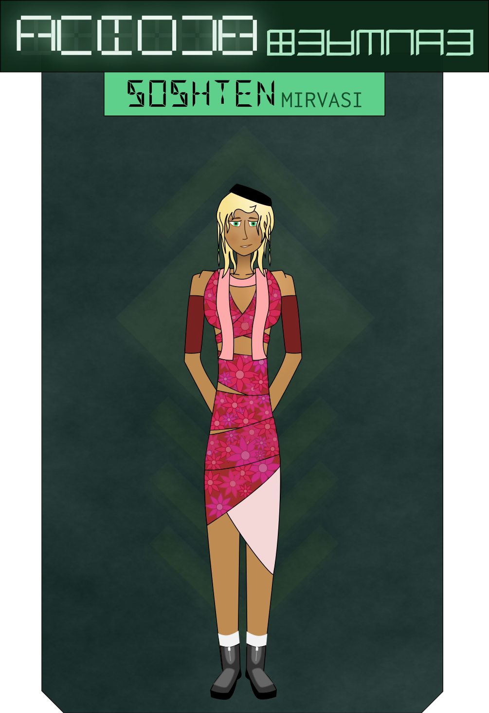

An electronic chirp from the door rouses me from where I’m resting, covered in warm blankets and nestled in pillows, my arms wrapped tight around one. I look up sharply at the unexpected noise, catching myself just before I slip into the old cycle of scanning for new threats. It’s just the doorbell, I tell myself, crawling out of bed.
I unlatch the door and slide it back. On the other side… Soshten?
It takes me a moment to recognize her out of her military uniform. She’s dressed in a floral-print robe, her long hair cascading down her shoulders instead of restrained in a tight bun. She smiles at me.
“Comrade Ambassador!” she says warmly. “I wasn’t sure you’d be in.”
“O-officer?” My heartbeat quickens. “Is something the matter?”
“No, no!” Soshten exclaims hurriedly. “Please. Call me Soshi. I’m off duty.”
“O-oh. Um.” I hesitate. “Well, comrade Soshi… what brings you by?”
She laughs. “Please. Just Soshi, comrade Ambassador. No need for such formality.” She leans casually against the doorframe. “I just wanted to stop in and see how you were coping. I’ve been worrying about you a little. May I come in?”
“Oh!” I step back and place my palms on my chest. “Please, come in.”
Soshten crosses her palms and inclines her head. “Elena tili solliv aftare.” She steps across the threshold, takes a seat on my small couch. She beckons me to sit beside her.
I slide the door shut and join her. “That phrase…” I begin as I sit down, wincing at the twinge of an old war-wound. “Is that how you say thank you in your tongue?”
“Oh!” Soshten hesitates. “Sorry, force of habit. I suppose it translates as something like… ‘your hospitality humbles me?’ You invited me into your home, that’s sort of a big deal for us.”
I smile awkwardly. “This is certainly not my home. My home is a lot bigger and has a view of Destiny Garden. Not to mention its own bathroom.”
“No? But… you’re resting here, sleeping here, aren’t you?”
I cross my legs, turn to look at her with curiosity in my eyes. “When you say ‘home’… how would you say that in Ranuir?”
“Well, we’re… not supposed to teach foreigners, but…” Soshten smiles, and leans closer. “Just between you and me?”
I smile back. “Just between you and me.”
“The word’s sol.”
“I think… sol means something a little bit different from ‘home.’” I nestle into the cushions a little bit more to soothe my aching back. “For us, a home is… it’s a place we build our lives. Where we keep our things, where we raise our families, where we always come back to, no matter how far we travel. It’s not just somewhere we sleep. A tavern isn’t home just because you’ve rented a room for the night.”
“You have such a strong connection to a single place?”
“Don’t your people?”
Soshten shakes her head. “Not really. A place is just a place. A bed is just a bed. There’s no reason I can’t be as comfortable here as I can back in Rantal Mirvas. Doesn’t it feel… confining, to be tied to one place like that?”
“Most of us find it comforting.”
“I learn something new about your people every day.” Soshten leans back and places her hands in her lap. “My apologies, comrade Ambassador. I did not mean to come here to ply you for lessons in your way of life.”
“No, no. It was my own doing.” I raise my hands reassuringly. “My curiosity got the better of me. And only good things can come of understanding each other better, can’t they?”
“You are a gracious woman, Kestrel-ambassador.”
“Please. My friends call me Kess.”
Soshten smiles warmly. “How are you faring, Kess?”
“I…” I laugh weakly. “Truth be told, I’ve had better days.”
“I asked a counselor to check in on you; has he been by yet?”
“He has.” I nod. “It was… an illuminating conversation. I’m… still processing some of the things he told me.”
“I’m so very glad.” Soshten leans forward. “Have you ever talked to anyone about it before?”
“Just two people. My chief of staff and a… Khmai medicine-man.”
“That’s all? You’ve been carrying this for… how long?”
“Since the war began. Seven years now, I think?”
“You poor girl.” Soshten takes my hand in hers, squeezes gently. “That must be lonely.”
“I… don’t have a lot of people in my life.”
“Not even lovers?”
I laugh quietly. “I… haven’t really had time for love. Not in a while.”
Soshten raises her eyebrows. “Surely a beautiful war hero like you must have suitors lining up around the block?” she asks, her voice gently teasing.
I blush a little. “I’m… really, I’m… heh. Thank you.” I shake my head. “Sorry, I’m… nobody’s called me that in a long time?”
“A war hero?”
“No, they call me that too much. ‘Beautiful,’ that’s not something I hear every day.”
Soshten clicks her tongue disapprovingly. “What happened to you, Kess? What has left you so alone?”
The bluntness of the question catches me off-guard. I look away. I can feel myself start to tremble a little. “I’m…” I stare at the floor, clear my throat. “I cared about a lot of people. Before the war. And… I…” Shakily, I try to brush the tears from my eyes. “Things happen in war.”
“People you loved… died?”
“Or worse.”
“Worse?”
“Please don’t make me go back there.”
Soshten immediately draws closer, puts her arm around my shoulders. “Kess. I am so sorry. That was thoughtless of me. Look at me?” She takes me gently by the chin and turns me to face her. “It’s all over. You’re safe. I’m not going to let anything happen to you.”
“I…” I feel my cheeks burn with embarassment as she reaches out and brushes the tears from my eyes. So casually, so… tenderly. Everything about her, how she touches me and holds me is… soft and warm and comforting and part of me, a part that hasn’t seen the light of day in a very long time, just wants to close my eyes and rest against her. “You’re… very kind,” I stammer.
Soshten smiles, inclines her head slightly. “You seem like a woman who’s had to take care of a lot of people.”
I nod silently.
“When was the last time you let someone take care of you?”
I can’t keep the tears in check anymore. They stream down my burning cheeks as I squeeze my eyes shut. I choke out a few sobs as Soshten pulls me closer, and almost on instinct I rest my head on her shoulder. She holds me quietly for a few minutes, stroking my neck with her free hand.
“Tell me about her,” she says after a while.
“Her name was Lily.” I sit back up slowly, lean back against the couch, rest my head on Soshten’s arm as I stare at the ceiling. “Have you ever met someone and just… felt this… instant connection with them? Like you’ve known them and loved them all your life?”
Soshten smiles. “I have, Kess.”
“She would always talk about how things would be after the war. About how she wanted to join the Senate. About building a life and a home together. Traveling and helping people rebuild. She always wanted to meet Sunfury too. She was such a hopeless fangirl.” The sobs become coughs; I double up, my whole body shaking with the force of them. “And th-then the… the ṕing wè phiņ zai e luo ņa ta e den tsuang Guard blew up a train. They were civilians, all of them. We sent them out of the city to keep them safe before the fighting started. Everyone died. Horribly. I pulled her body out of the rubble three days later.” I can’t look at Soshten. Past and present are blending before my eyes. I can see Lily’s body, scorched and blackened where the fireball struck her. I—
Soshten jerks me upright, forces me to look at her, squeezes my arm hard. “Come back to me, Kess. It’s not happening. You’re here. In the embassy. Look at me.”
I shudder and try to wipe the tears away. Soshten pulls me closer and runs a hand up and down my bare arm. “I’m… I’m so sorry, I’m s…such a fucking wreck,” I choke out. “God, you shouldn’t have to deal with… this is pathetic, I—”
“Kess.” Soshten lifts my chin again, looks me in the eye. “You are not pathetic. You are a hero and your scars deserve respect.”
“Why… why are you being so kind to me?”
Soshten takes me by the shoulders. “Four years ago,” she says, her voice quiet but firm. “It was a transport ship. We were carrying tech to a young colony world. Tel Vaniar. You know how much our tech is worth on den tsuang black markets?”
I shake my head.
“We got hit by pirates. They were waiting for us after our first shift through. Out in a dead system, no backup for parsecs. We never did figure out how they knew we’d be there. Three ships swarmed us, took out our missiles in CQB before we could get a single shot off. They launched boarding capsules, blew through the hull with explosives. They were all in vac-suits and our air was venting. I saw my friends blown out into space right in front of my eyes.”
I stare at her. “Oh… oh my God.”
“Half of my unit died in the first twenty seconds of that battle. We barely got the ship locked down in time to spare the rest of the atmosphere. They blew through the bulkhead while we were suiting up. Only three of us had our hardsuits on. The rest… I remember blacking out in the middle of emptying my sidearm at some den tsuang tahin, choking and gasping for air. They managed to drive them back and get me in a suit just in time. We weren’t all so lucky. Six more of my unit died from hypoxia. I don’t know why I’m alive and they’re not.
“Two of the other survivors suffered permanent brain damage.”
She looks at the floor. “We managed to pin down the pirates in the cargo bay after we’d suited up. There were more of them but we had better armor and they had shitty guns. Our suits had enough O2 for half an hour each. Our ship was short-range. It didn’t have a recycler. And the atmosphere was completely gone. We mopped up the pirates, drained the O2 from their suits, bought us maybe another hour. We all thought we were dead women walking.
“We knew there had to be more of them on the other ships. Probably just waiting for us to suffocate. We had no escape route, no hope of rescue. We were about to scuttle the ship to keep our tech out of Rosie hands. More out of spite than anything else; we were just carrying basic circuit components and a batch of nanoprocessors they wouldn’t know what to do with. And then out of nowhere a cruiser shows up. Two seconds later the pirate skiffs are dead in space; ten seconds later they’re getting boarded. It’s all over in two minutes. The transport’s such a wreck that we end up having to spacewalk over. Only a third of my unit survived.”
“I’m… so sorry.” I stare at Soshten. “That’s…” I shake my head. “I didn’t realize you’d… you’d been there too.”
She nods. “That was the first time I ever took a life. The first real combat I ever saw. I know what you’re going through, Kess. I had the nightmares for years. Every time I even thought about getting on another ship, I had flashbacks. Once they had to hook me up to a fent IV for the whole trip. They had to wean me off it when we got back.”
“It… it gets better?”
“It does, Kess. With treatment. It takes time. A lot of time. And it never fades completely. But you can learn to live with it.” She reaches under her robe and pulls out a small grey cylinder hidden underneath. “Here,” she says, passing it to me. “This is for you.”
“W…what is it?”
“It’s a fent dispenser. I picked it up for you at the dispensary. If you feel yourself having an attack, hold it up to your mouth and press the green button. It sprays a dose under your tongue. Not as fast as injections, but it’s still quick enough to pull you back out. It’s got enough for… thirty-two doses? Sorry, I haven’t got the hang of your numbers yet.”
I take the device gingerly, staring at it. “It’s… safe?”
Soshten nods. “I used one for years. The attacks reinforce themselves, make you live in constant fear of setting them off. But if you stop them early, get counseling… the pain will dull.”
“I… thank you.” I set the cylinder carefully on the glass table across from us. “Soshte— Soshi, you… you are an incredibly kind and thoughtful woman. I don’t know how to thank you.”
Soshten pats me on the shoulder. “Seeing hope in your eyes like that is all the thanks I need.”
“Soshi?”
“Kess?”
“I was just wondering… how… how did a cruiser get to you so quickly?” I murmur. “I mean, I’m no tian bèi but… I didn’t think that was possible, for a ship to jump so far on such short notice.”
Soshten nods. “It’s not. The cruiser, it turned out, was from a shipyard over a parsec away. They were going to send it out to reinforce the Barrier Stars, and the fourth leg of the shift-path was going to put it in the same system we were stuck in. As soon as our distress buoy shifted through, the station commander sent out a sector-wide call for help. The shipyard realized they had a way to get to us, loaded up the new ship as fast as they could, filled her with fuel cells so she wouldn’t have to recharge at each waypoint, and sent her out. She hadn’t even gotten her name yet. Most of the soldiers on board had been working as techs and had never even seen combat before. All from different units. It was an actual miracle.”
“They sent techs in to fight pirates?”
“I mean. We all have the skills. Most of us aren’t active-duty, though.”
“Everyone who works on ships is a trained soldier?”
Soshten laughs. “Every citizen is a trained soldier. Everyone older than 17 is supposed to be combat-ready.”
“Every citizen?” I shiver. “You’re… God, that’s horrible. I had no idea.”
Soshten turns her head slightly in confusion. “Horrible? Why would you say that?”
“Why would… Soshi, you’ve lived it! I’ve lived it. I wouldn’t wish that life on my worst enemy.” I shrink back slightly, the full implications of her words quickly weaving their way through my mind. “I fought because I never wanted there to be another war. I wanted the next generation to grow up to be… farmers and inventors and writers and painters and architects and builders. Not killers. I…” I shake my head violently. “Is this what the League is about? War? Endless cruelty and blood and war?”
Soshten reaches out and takes my hands in hers. “Have I been cruel to you, Kess?”
“I…” I look down. “No, you… you’ve been… I’m not…”
“Has any one of our people been cruel to you?”
“No! No, you’ve all been… You’re all soldiers?”
“We are.”
“…I’ve never seen an army like this one.”
“My people take no more joy in cruelty and bloodshed than you do, Kess.” Soshten strokes my arm. “You fought because you never wanted your people to face another war. We prepare for war so we can prevent it. So no foe dares to threaten our worlds. And we would never try to force our way of life upon the League. Some take after us of their own will. Some go their own way.”
“Being a soldier… it takes something away. It breaks a part of you.”
Soshten pulls me closer again. “I’ve read about your war. It was a desperate one, was it not?”
I nod wordlessly.
“There was no walking away. There was no respite. Every day became a struggle for survival in the face of overwhelming odds. A soldier was all you could be. Everyone was forced straight onto the front lines. You had no space to be anything else. Of course it broke you.”
“Didn’t it break you?”
“Your people became soldiers in the midst of terrible violence. Ours become so in a place of peace. There is no death, no fear, no suffering. Yours learned the art of war amid bullets and mortar-fire, from the bodies of the fallen. Ours learn it at desks, in ranges, in clean air under the light of a warm sun, with friends and comrades at their side. And we hope all our lives that the time never comes for us to put those skills to use. Most never have to.”
I hesitate. I stare at Soshten’s face. Warmth, kindness, sincerity is all I see. Not the cold, hard distance that I grew accustomed to from my comrades on the battlefield.
“Soshi?”
“Kess?”
“Tell me something.”
“As long as it’s not too classified.” She grins at me.
“What does it… mean to your people? Being a soldier?”
She gazes at me for a minute, thinking. “Courage and discipline,” she says after a moment. “It means never hesitating to defend what is ours. It means leaping into action whenever an innocent life is in danger. It means caution and care in how we live. Preserving our minds from the pollution of foreign ideas. It means having the humility to accept guidance with gratitude, to recognize leadership when we see it, to understand the world and our place in it, to never think we are more or less than we are.” She pats my thigh. “What does it mean to you?”
I sigh heavily. “Killing. And not dying.”
Soshten nods slowly. Then she slides closer and embraces me tenderly.
“I hope you never have to be a soldier again, Kestrel-surin.”
I rest my head on her shoulder, hugging her back this time. Tears drip down my cheeks.
“Thank you, Soshi-surin.”
Soshten giggles. “You pick things up fast, don’t you?” She draws back a bit, leaving her hands on my sides. “Can you say tilit elen tare?”
“Chi— Ti li te len— ta le? Ta… re?” I make a face and try again. “Tilit elen tare? Is that it?”
“Yes!” Soshten nods happily. “That’s very good. Your accent is… a bit Zyahua. But most of you can’t tell the difference between le and re, and you got it all on your own. I am very impressed.”
I smile. “I learned a little Khmaira during the War. I figured out there was a difference eventually. What does it mean, though?”
“It’s how we say thank you. Well, it’s one way. There’s a couple. That’s the one you say when someone’s… lent you strength, I suppose you’d say? But tilit, you only say that to a colleague. If you’re talking to a friend, you say tamit instead.”
“So… tamit elen tare?”
“Perfect!” She smiles. “You’re really good at this, Kess.”
“Are there other words? Like, if you’re not talking to a friend or a colleague?”
“There’s a couple. Like you’ll say san if you’re with a superior. Sanit elen tare. Like your commander or whoever. I guess if you were… talking to the President? You don’t have a lot of superiors, I’d guess.”
“Sanit elen tare.” I murmur the words quietly. Soshten smirks.
“I don’t hear people say that to me often.”
“Aren’t you in charge of anyone?”
“The only people I’m in charge of are people like you, and you don’t speak Ranuir.” Soshten inclines her head. “But this is a good start.”
“What are some of the other words I can use?”
“Well, if you’re being really sarcastic, you can say desit elen tare. Sort of like, ‘Thanks a lot, asshole.’ Please, uh. Please don’t ever say that, it’ll only ever get you in trouble.”
I nod. “Okay. Any others?”
“Ah. Yeah, there’s lin too. You only use that one with, um. People you’re very close to.”
“So if I said, linit elen tare…”
Soshten immediately blushes. “I’m sorry, that is really cute coming from you.”
I laugh. “Cute? I don’t get called that very often either.”
Soshten tousles my hair. “I can see why. You’re too… commanding. You don’t let many people see this side of you.”
“What side of me?”
“The broken side. The weak side. The side that needs guidance and tenderness and support.”
“I… I don’t…” My face burns hot with embarassment. “Do you really think I’m… weak?”
Soshten pats my cheek gently. “You are burdened beyond your strength. It is nothing to be ashamed of. Or does your culture shame the weak as well as the wounded?”
“Doesn’t yours?”
“No! Stars and skies, no. Everyone deserves to be safe and comfortable. Everyone deserves a fulfilling life. The whole point of strength is being able to lend it to those who lack it.”
“…is that why you came to check up on me?”
“Of course. I saw a wounded comrade who shared my scars. How could I leave you on your own?”
I smile timidly. “That’s… very strange and sweet. Tha—” I stop, look her in the eye, and reach out to place a hand on her neck. “Linit elen tare, Soshi-surin.”
Soshten stares at me for a moment, then pulls me close and hugs me. “You are the sweetest uassurin I’ve ever met. You just met me and you’re already calling me lin?”
“I guess it’s different among your people, but among mine… the way you’ve been treating me…” I shake my head. “It’s a lot like seeing someone naked. It’s… very intimate. You’d never just let a friend touch you like this.”
Soshten immediately releases me and sits back. “Lahi narit elena risesh! I’m so sorry. I have crossed boundaries—”
I reach out and take her hand. “No. I think part of being an ambassador means exploring different ways of… fitting into the world. Letting your boundaries down. I’m not just here to represent my people to you. I’m here to bring home new ideas, new ways of living. And I’m grateful to have the opportunity to learn from you.” I extend a hand again. “To be truthful… it feels freeing, right now, to be able to just… let things happen, according to your customs. And I mean. You’ve already seen me naked.”
Gingerly, Soshten takes my hand. “So… you liked it, how I was treating you?”
“Nobody has held me that way in a very long time. I’ve… I haven’t had a lot of human contact since… since before the War.”
Soshten looks almost heartbroken. “Kess-surin,” she murmurs, squeezing my hand. She stands up, and nods towards the bed in the corner. “Would you like to rest with me for a little while?”
I smile gratefully up at her. “How do you say ‘yes’?”
“Han is ‘yes.’ And ve is ‘no.’ That’s just as important.”
“Han, Soshi-retlas. Linit elen tare.”
Soshten shakes her head. “That’s really adorable but also it sounds really silly to call me retlas and then lin. Like one moment you’re being all formal and the next you’re flirting with me.”
“Oh.” I laugh awkwardly. “What should I say instead? Surin?”
“Just Soshi is fine, Kess.” She takes my hand and pulls me to my feet.
“Then… han, Soshi. Linit elen tare.”
“Hearing the Speech from a uassurin.” Soshten shakes her head. “That’s not something I would have thought to see in my lifetime.”
I smile. “I seem to have confounded a lot of expectations in the short time I’ve been here.”
“You are a fascinating woman, Kess.” Soshten sits down on the bed and pats the spot next to her. I sit down as well.
“Soshi?”
“Yeah, Kess?”
“What’s uasurin?”
“Uassurin. You have to hold the s-sound longer. And it’s…” She hesitates. “The normal word for a foreigner is uastash. Only it’s kind of rude to call someone from a socialist nation that. I mean, it’s not as bad as tahin but it’s still kind of like calling you a barbarian. So we say uassurin instead. ‘Foreign comrade,’ I guess.”
“And that’s different from plain surin like you called me earlier?”
“Very, very different.” Soshten leans back, resting her head on a pillow. I lay down on my side next to her, a hand on her abdomen. “A surin is a real comrade. Someone you’d be honored to fight alongside. Someone who believes in building a better world. Who knows what that means, who isn’t afraid to make sacrifices.” She looks up at me. “And that’s you.”
“You know. We trade with League worlds. I heard… a lot of rumors about your people.”
Soshten smirks. “Like what?”
I grin. “Mostly that you were smug, supercilious bastards who thought you were better than everyone. The only real socialists in the galaxy.”
Soshten laughs out loud. “Not at all. We’re only better than almost everyone.”
“Weren’t you just talking earlier about how important humility is?”
“We know our place, Kess. We just happen to know our place is to keep the less disciplined peoples under control, for their own good.” She squeezes my waist, slipping her fingers under the folds of my robe. I shiver at the warm touch of her soft hands on my cold skin. “And we know how to recognize our equals when we meet them.”
I stroke her cheek, run my thumb across her lower lip. “Tell me something about your culture?”
“What’s that?”
“Among my people, it would be really, really inappropriate for you, someone I’ve just met and barely know, to kiss me. Is it any different among yours?”
“Not really,” says Soshten, and pulls me in for a kiss.
We lay there for a while, tangled in the sheets, arms around each other. I close my eyes, let the warmth of her body next to mine soothe my weary joints. I can’t even remember the last time I just… held another human being.
I open an eye. “Soshi?”
“Yeah, Kess?”
“Another one of those rumors I heard?”
“Yeah?”
I trace the outline of her leaf-shaped ear, gaze into her bright green eyes. “You are, like… actually human, right? Like, are we the same species? Some people… some people say you’re aliens.”
Soshi shrugs. “Got no idea. I’m not a biologist.”
I nod, and close my eye. “Right. Yeah. Not sure why I thought you’d know that.”
